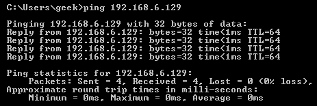
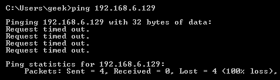
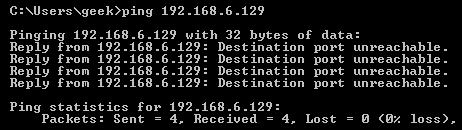

# Linux - iptables
## Chains
iptables has 3 different chains
•
Input - controls incoming connections
•
Forward - controls incoming connections to be forwarded elsewhere
◇ (used on routers, not your user PC)
◇ to check if you need the forward chain, run
iptables -L -v and check how many packets/bytes have passed through it
•
Output - controls outgoing connections
◇ but keep in mind that to return data the input chain needs to be open too
◇ e.g.
▪ output chain allows pinging external hosts
▪ input chain for ping needs to be open as well so that you see the response
◇ e.g. SSH needs to be in the input chain and output chain to both send and receive data
## Rules
•
Accept - allow the conneciton
•
Drop - drop the connection / act like it never happened. Best if you don't want the source to realise your system exists
•
Reject - don't allow the connection, but send back an error
Here's what each of those look like with
ping...
Allow
Drop
Reject
## Connection States
If you want to allow SSH connections to your system, the input and output chains are going to need a rule added to them. But, what if you only want SSH coming into your system to be allowed? Won’t adding a rule to the output chain also allow outgoing SSH attempts?
That’s where connection states come in.
Incoming SSH connections from 10.11.0.184 are allowed
iptables -A INPUT -p tcp --dport ssh -s 10.10.10.10 -m state --state NEW,ESTABLISHED -j ACCEPTOutgoing SSH traffic to destination 10.11.0.184 is allowed IF the connection is already established.
iptables -A OUTPUT -p tcp --sport 22 -d 10.10.10.10 -m state --state ESTABLISHED -j ACCEPTThis blocks outgoing SSH connections over the whole system, but allows for outgoing SSH data when someone has already established an SSH connection from 10.11.0.184.
## Commands
• When a connection is made, iptables goes through the list of rules 1 by 1 until it find a rule that matches the connection
◇ you can insert rules above or below one another
-A - append rule to end of specified chain
-I [chain] [number] - Insert a rule at a specified place in a chain
iptables -L - View current rules
iptables -L -v - View total amount of data gone through each chain
iptables -F - flush (clear) all the currently configured rules
DroppingDrop all incomoing connections from a single IP
iptables -A INPUT -s 10.11.0.184 -j DROPDrop all incoming SSH connections from a single IP
iptables - A INPUT -p tcp --dport ssh -s 10.11.0.184 -j DROPDrop all incoming SSH connections from
every IP
iptables -A INPUT -p tcp --dport ssh -j DROP## Saving Changes
The changes that you make to your iptables rules will be scrapped the next time that the iptables service gets restarted unless you execute a command to save the changes.
Ubuntu
sudo /sbin/iptables-saveRed Hat / CentOS:
/sbin/service iptables saveOr
/etc/init.d/iptables save